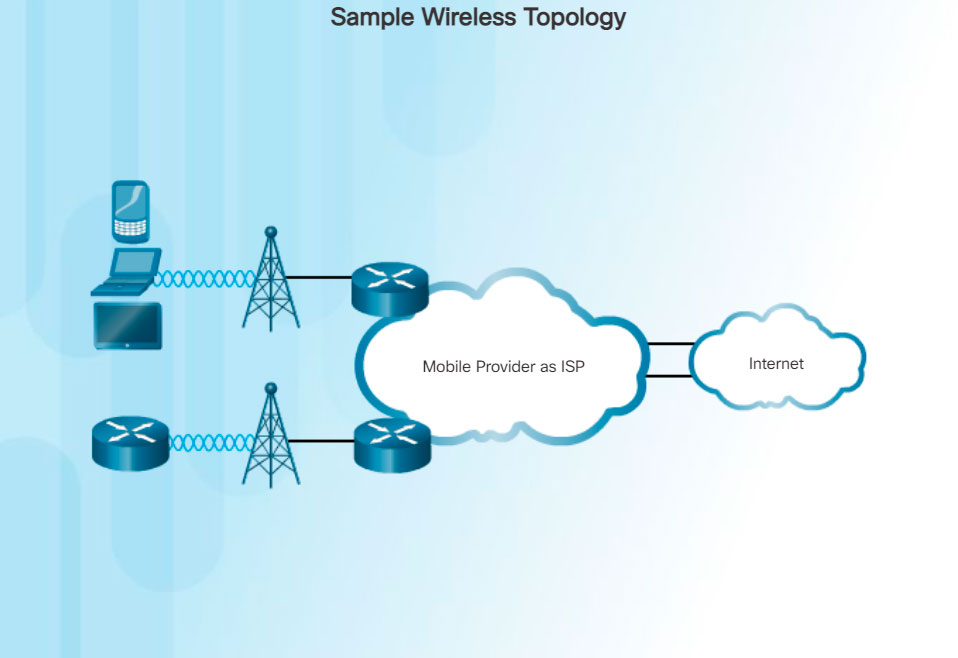

Increasingly, cellular service is another wireless WAN technology being used to connect users and remote locations where no other WAN access technology is available. Many users with smart phones and tablets can use cellular data to email, surf the web, download apps, and watch videos.
Phones, tablet computers, laptops, and even some routers can communicate through to the Internet using cellular technology. These devices use radio waves to communicate through a nearby mobile phone tower. The device has a small radio antenna, and the provider has a much larger antenna sitting at the top of a tower somewhere within miles of the phone.
These are two common cellular industry terms:
